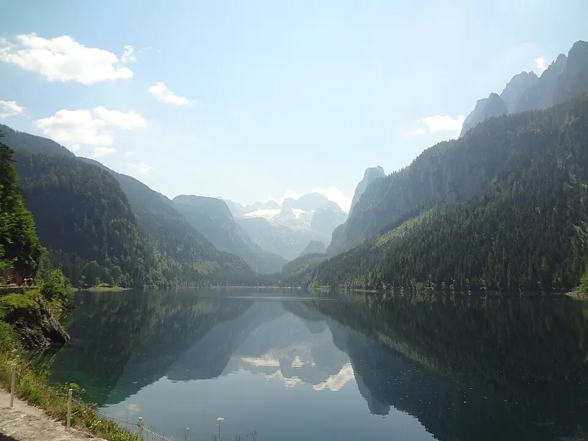

Ausflug · für alle
Vorderer Gosausee
ca. 7 km ab Gosau-Ort
Der bekannteste Blick des Salzkammerguts: Im Wasser spiegelt sich bei ruhigem Wetter der Dachsteingletscher. Ein flacher Rundweg führt in etwa einer Stunde um den See, auch mit Kinderwagen.